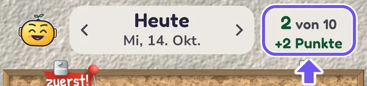

Das Wichtigste zuerst
- Was du tust: die App installieren, 14 Tage drauflassen und möglichst jeden Tag kurz benutzen. Am Ende kommt ein Fragebogen, etwa 5 Minuten.
- Was es kostet: nichts. Niemand fragt dich nach Zahlungsdaten.
- Was du falsch machen kannst: nichts. Wenn etwas nicht klappt, liegt es an der App oder an dieser Anleitung. Genau das will ich wissen.
Warum das Ganze? Bevor die App in den Play Store darf, müssen mindestens 12 Personen sie 14 Tage am Stück testen. Das verlangt Google.
So kommt die App auf dein Handy
Du brauchst ein Android-Handy oder -Tablet (Android 8 oder neuer) und das Google-Konto, das du im Play Store benutzt. Die Knöpfe funktionieren, sobald ich dir Bescheid gegeben habe.
-
Der Testgruppe beitreten
Öffne die Seite und tippe auf „Gruppe beitreten“. Die Angaben im Fenster kannst du so lassen. Was du bei „Abo“ wählst, ist egal.
Zur Testgruppe -
Beim Test anmelden
Tippe auf der nächsten Seite auf „Tester werden“.
Zum Test anmelden -
Installieren
Folge dem Link zu Google Play und tippe auf „Installieren“. Das ist der echte Play Store, wie bei jeder anderen App.
Klappt etwas nicht? Schau unten bei „Die App lässt sich nicht finden“ oder schreib mir einfach.
Die ersten Minuten
Öffne die App und probiere sie erst einmal ohne Hilfe aus. Tack, die kleine Figur, führt dich. Jede Stelle, an der du stockst, ist für mich eine wertvolle Rückmeldung.
Ich komme nicht weiter
- Zettel schreiben: Schreib unten in das Feld, was du heute tun willst, oder sprich es über das Mikrofon. Kleine Dinge zählen auch, zum Beispiel „Ein Glas Wasser“. Keine Idee? Tippe auf die 💡.
- Den Tag fest vornehmen: Wenn alle 10 Plätze belegt sind, tippe oben auf „Top-Thema wählen & committen“. Such das Wichtigste aus und halte den Finger darauf.
- Abhaken: Tippe unten rechts in die Ecke eines Zettels. Tippst du woanders auf den Zettel, öffnet er sich.
- Geht heute nicht? Öffne den Zettel und wähle „Heute nicht“. Das ist völlig in Ordnung.
Tack erklärt das auch noch einmal auf dem Brett: Punkte-Feld oben rechts › „Einstellungen“ › „Erste Schritte zeigen“.

Die 14 Tage
Lass die App bitte die ganze Zeit installiert und bleib im Test. Wer vorher aussteigt, zählt bei Google nicht mit. Die 14 Tage musst du nicht selbst zählen, ich sage dir Bescheid, wann es geschafft ist.
Eine oder zwei Minuten am Tag reichen. Einen Tag vergessen? Nicht schlimm, mach einfach am nächsten weiter.
Google will außerdem wissen, ob die Tester die ganze App kennengelernt haben. Probiere deshalb nach und nach aus, was du magst. Alles musst du nicht schaffen:
- Zettel anlegen, den Tag fest vornehmen, abhaken
- Eine Gewohnheit anlegen, zum Beispiel „Wasser trinken“
- Eine Fokus Zeit starten
- Zur Zeitleiste und zu den Listen wischen: Einkauf, Parkplatz, Notizen
- Das Widget auf den Startbildschirm legen
- Den Kalender einschalten, wenn du möchtest
- Die Fortschritt-Seite ansehen
- Premium ausprobieren: Punkte-Feld › „Einstellungen“ › zwischen „Standard“ und „Premium“ umschalten. Das kostet nichts. Dann einen anderen Stil wählen.
Im Test bekommst du ab und zu eine neue Fassung über den Play Store. Dann kann etwas anders aussehen als vorher.
Mir Bescheid geben
Alles zählt, auch „Das habe ich nicht verstanden“ oder „Das gefällt mir nicht“. Du musst dabei keine Fachwörter kennen und nichts höflich verpacken.
- In der App: Punkte-Feld › „Einstellungen“ › ganz unten „Problem melden / Idee schicken“. Es öffnet sich eine fertige E-Mail. Du siehst sie und schickst sie selbst ab.
- Oder ganz normal: Schreib mir so, wie du mich sonst auch erreichst, oder an hallo@tenanddone.app.
Bei einem Fehler helfen mir drei Sätze: Was wolltest du tun? Was ist passiert? Was hattest du erwartet?
Ein Bildschirmfoto hilft auch. Bei den meisten Android-Handys drückst du dafür die Ein/Aus-Taste und „Leiser“ gleichzeitig. Schau vorher, ob etwas Privates darauf zu sehen ist.
Häufige Fragen
Die App lässt sich nicht finden
Das liegt meist an einem von diesen Punkten:
- Etwas warten: Nach der Anmeldung kann es eine Weile dauern. Versuch es später noch einmal.
- Falsches Konto: Siehe die nächste Frage.
- Direkt im Play Store nachsehen: Öffne den Reiter „Für mich“ und suche unter „Apps in Entwicklung“.
Hilft das nicht, schick mir ein Bildschirmfoto. Das kriegen wir hin.
Ich habe mehrere Google-Konten auf dem Handy
Gruppe, Anmeldung und Play Store müssen dasselbe Konto benutzen. Das Konto siehst und wechselst du, wenn du oben rechts auf dein rundes Profilbild tippst. Wechsle dort auf das Konto, mit dem du der Gruppe beigetreten bist. Öffne dann die Links noch einmal, am besten in Chrome.
Sieht jemand, was ich in die App schreibe?
Nein. Die App hat kein Konto und keinen Server. Deine Zettel bleiben auf deinem Handy, auch ich sehe sie nicht. Es gibt keine Werbung und keine Auswertung deiner Nutzung.
Zwei Ausnahmen liegen in Googles Hand: Ist die Google-Sicherung deines Handys an, legt Android die Daten der App verschlüsselt in deinem eigenen Google-Konto ab. Und beim Diktieren kann Googles Spracherkennung die Aufnahme verarbeiten. Die App speichert nur den erkannten Text.
Alles Genaue steht in der Datenschutzerklärung.
Was erfährt Andreas über mich?
Ich sehe die E-Mail-Adresse und den Namen, mit denen du der Gruppe beitrittst. Die anderen Tester sehen das nicht, und du siehst sie auch nicht. Außerdem lese ich, was du mir selbst schickst.
Die Mail aus „Problem melden“ enthält App-Version, Handy-Modell und Android-Version. Hatte die App einen Fehler, kommen die Fehlermeldung und die betroffene Stelle im Programm dazu. Inhalte deiner Zettel gehören nicht dazu. Du siehst die Mail vor dem Absenden und kannst den Anhang löschen.
Die App fragt nach einer Erlaubnis. Soll ich zustimmen?
Das entscheidest du. Sagst du Nein, fehlt nur diese eine Funktion:
- Mitteilungen: für Erinnerungen
- Kalender: damit deine Termine als Zettel erscheinen
- Mikrofon: nur zum Diktieren
- „Nicht stören“: nur während einer Fokus Zeit
Kann die App auf meinem Handy etwas durcheinanderbringen?
Drei Dinge wirken über die App hinaus, und alle nur, wenn du sie selbst nutzt:
- Kalender: Termine und Geburtstage, die du in der App anlegst, stehen auch in deinem Kalender. Andere Termine ändert sie nicht.
- Gäste: Lädst du jemanden zu einem Termin ein, bekommt die Person wirklich eine Einladung. Probiere das am besten nur mit Menschen aus, die davon wissen.
- Fokus Zeit: Währenddessen ist „Nicht stören“ an, Anrufe und Nachrichten bleiben still. Wecker klingeln. Danach stellt die App den vorherigen Zustand wieder her. Starte sie also nicht, wenn du auf einen wichtigen Anruf wartest.
Kann ich mich schon ganz auf die App verlassen?
Noch nicht. Es ist eine Testfassung. Behalte wichtige Termine und Aufgaben deshalb auch dort, wo sie bisher stehen. Die App ersetzt auch keinen Wecker.
Die App hängt oder stürzt ab
Schließe sie ganz und öffne sie neu. Beim nächsten Start fragt Tack, ob du mir Bescheid geben magst. Das hilft mir sehr. Mit ein paar Worten dazu, was du gerade gemacht hast, finde ich den Fehler leichter.
Die Erinnerungen stören mich
Du stellst sie unter Punkte-Feld › „Einstellungen“ › „Grundeinstellungen“ › „Erinnerungen“ ein.
Ich habe die App aus Versehen gelöscht oder ein neues Handy
Kein Problem. Öffne den Test-Link von oben und installiere sie wieder, mit demselben Google-Konto. Sag mir kurz Bescheid. Deine Einträge können dabei weg sein.
Was passiert nach dem Test?
Ich sage dir Bescheid, wenn die 14 Tage geschafft sind. Danach darfst du die App behalten oder löschen. Den Schalter für Premium zum Ausprobieren gibt es nur in der Testfassung.
Ich möchte doch nicht mehr mitmachen
Das ist in Ordnung. Sag mir bitte kurz Bescheid, damit ich rechtzeitig jemand anderen fragen kann. Dann öffne den Test-Link von oben und verlasse dort den Test, lösche die App und tritt aus der Gruppe aus. Mit dem Löschen der App sind auch deine Einträge auf dem Handy weg.
Deine Frage steht hier nicht?
Dann frag mich einfach. Keine Frage ist zu klein. Was ich nicht sofort weiß, finde ich für dich heraus.
Danke, dass du dabei bist!
Andreas